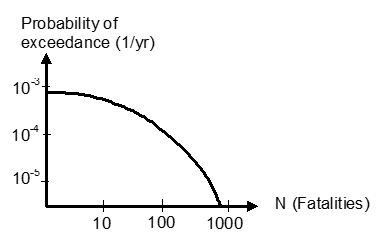
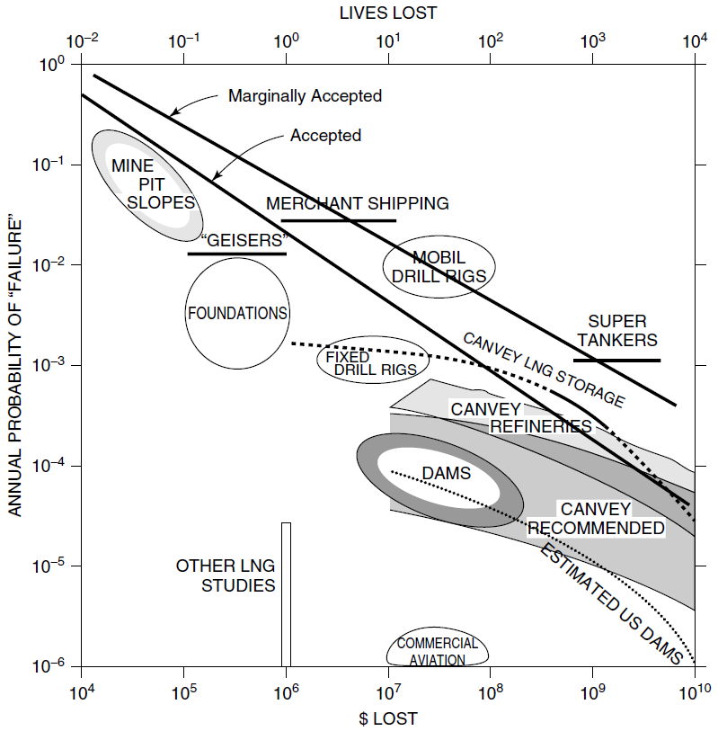
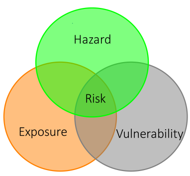

Definition of Risk#
Almost all activities in life are characterized by some level of risk. Especially in the design and management of engineering systems, risk and safety are key concepts and need to be taken into account explicitly. In social discussions no unambiguous meaning is assigned to the concept of risk. Two definitions given in the Oxford dictionary are: 1) a situation involving exposure to danger; 2) the possibility that something unpleasant or unwelcome will happen.
The first definition focuses on the consequences, the second on the possibility or probability. Quantifying and evaluating risks based on either probabilities or consequences (not both) is less realistic. For example, the risk of losing € 100 with a probability of 50% is different than the risk of losing € 1000 with the same probability. Also, the risk associated with losing a given sum of money will depend on the probability of the event. An often-used definition considers risk as an expected value:
Risk is the probability of an undesired event multiplied by the consequences.
The unit of risk now depends on the units of probability and consequences, where probability of an event is generally expressed as the probability per unit time, for example per year. The consequences of an undesired event often measure a diverse array of damages, such as material, ecological, injuries and fatalities. In many applications engineering consequences are expressed by means of a monetary value, in which case the unit of the risk (or expected value, \(E(d)\)) then becomes € per year. For a case with one event scenario \(i\) with probability \(p_{i}\) it yields:
A more general definition of risk has been given by Kaplan and Garrick (1981):
Risk is a set of scenarios, \(s_{i}\), each of which has a probability, \(p_{i}\), and a consequence, \(d_{i}\).
This definition allows the use of various so-called risk metrics (or risk measures) to quantify or depict risk. The expected value of the damage for a set of multiple discrete scenarios \(i=1,....,n\) , can be expressed as:
For the set of scenarios considered, the expected value quantifies risk precisely; however, it does not give insight in the magnitude of probability and consequences and the contribution of individual scenarios. For example, a single value does not indicate whether the risk is governed by a large number of scenarios with small consequences, or a few scenarios with large consequences and low probabilities. Therefore, an often-used companion risk-based tool is the risk curve, which shows the probability of exceedance and consequence for all scenarios. A well-known example of such a risk curve is the FN curve, which displays the probability of exceedance associated with \(N\) (human) fatalities, schematized in Fig. 8.1. It is easy to compare the probability of exceeding a relatively low or high number of fatalities.
{kind=link}

Fig. 8.1 FN curve, showing the probability of exceedance of a certain number of fatalities N on Log-Log scale.#
The FN curve was originally introduced in the 1960’s for the assessment of risks in the nuclear industry (Farmer, 1967, Kendall et al., 1977) and is now used to display and limit risks in a wide variety of industries around the world. It is an extremely useful way to quantitatively compare risk associated with a broad range of scenarios, and to make decisions. A famous example of this is shown in Fig. 8.2, which compares the risk estimated for a wide variety of engineering infrastructure. This figure is described further in the Risk Curve Section, and also illustrates the concept of acceptable risk, which is discussed in the Section on Safety Standards. In short, it allows one to begin answering the question ‘how safe is safe enough?’
{kind=link}

Fig. 8.2 Risk curve for various engineering projects, showing probability of exceeding a specific number of fatalities, \(N\), and damages, $, on a Log-Log scale, making it both a FN and FD curve; see Risk Curve Section. Source: Baecher and Christian (2003), based on Baecher (1982) and described in Baecher (2021).#
Hazard, Vulnerability and Exposure#
Engineering disciplines that are focused on decision making where natural hazards play a significant role often define risk as the combination of hazard, exposure and vulnerability, as shown in Fig. 8.3.
Hazard: A dangerous phenomenon, substance, human activity or condition that may cause loss of life, injury or other health impacts, property damage, loss of livelihoods and services, social and economic disruption, or environmental damage
Vulnerability: The characteristics and circumstances of a community, system or asset that make it susceptible to the damaging effects of a hazard
Exposure: People, property, systems, or other elements present in hazard zones that are thereby subject to potential losses
{kind=link}

Fig. 8.3 Alternative definition of risk as intersection of hazard, exposure and vulnerability. Risk is the small triangular-shaped area where all three circles overlap.#
Often these terms are useful for framing qualitative discussions around complex topics where a quantitative analysis may be out of reach, for example, as done in IPCC reports on climate change (Cardona et al., 2012). However, they can also be used to simplify the risk analysis by subdividing it into parts that are (computationally) independent. An analytic expression can easily be formulated by expanding the probability term of Equation (8.1):
where \(N_i\), \(E_j\) and \(H_k\) are the vulnerability (fatalities), exposure and hazard of scenario \(i\), respectively. Combining with Equation (8.1) and taking the sum over all combinations of variables (\(i\), \(j\), \(k\)) would give the total risk. In the case of our flood management case, an example of each term could be:
Hazard, \(H_k\): a high water level.
Exposure, \(E_j|H_k\): breach (failure) of a dike due to the high water level, \(H_k\).
Vulnerability, \(N_i|E_j,H_k\): fatalities given the broken dike and high water level. \(N\) is usually modeled as a random variable as it is dependent on factors such as evacuation effectiveness and flood warning systems.
Other Risk Definitions#
This book uses Equation (8.1) as the primary definition of risk. However, it is useful to highlight some risk concepts used in other domains.
Within economics, risk is generally associated with a deviation from the expected return or the probability of loss. In social sciences risk is often considered as a contextual notion or social construct. Vlek (1996) has summarized 11 formal definitions used in social sciences, see Table Table 8.1. In some of these definitions (e.g. numbers 2 and 4) the perceived seriousness of the undesired consequences plays an important role. Examples of other, more informal risk definitions used in psychology are “the lack of perceived controllability”, “set of possible negative consequences” and “fear of loss” (Vlek, 1996).
Substantial research has also focused on factors that determine the perception of risk (e.g. Slovic (1987), Vlek (1996)) including: degree of damage, controllability of and familiarity with hazards, extent of benefits from an activity, and voluntariness of exposure.
No. |
Definition |
|---|---|
1 |
Probability of undesired consequence |
2 |
Seriousness of (maximum) possible undesired consequence |
3 |
Multi-attribute weighted sum of components of possible undesired consequences |
4 |
Probability \(\cdot\) seriousness of undesired consequence (‘expected loss’) |
5 |
Probability-weighted sum of all possible undesired consequences (‘average expected loss’) |
6 |
Fitted function through graph of points relating probability to extent of undesired consequences |
7 |
Semi variance of possible undesired consequences about their average |
8 |
Variance of all possible consequences about mean expected consequence |
9 |
Weighted sum of expected value and variance of all possible consequences |
10 |
Weighted combination of various parameters of the probability distribution of all possible consequences |
11 |
Weight of possible undesired consequences (‘loss’) relative to comparable possible desired consequences |